final_fem_22 <- read.csv("C:/Users/Alexandre_Nicolella/Aulas/FEA-RP/Jurimetria/jurimetria/final_fem_22.csv", head=T ,sep=";")6 Análise Descritiva
Tirando Informação dos Dados
6.1 Cadeia de Valor do Conhecimento
A construção do conhecimento é um caminho longo e complexo. A cadeia de valor do conhecimento é um modelo que busca representar esse caminho. Vejamos a Figura abaixo:

Para cumprir esse longo percurso a Ciência de Dados tem um papel fundamental na atualidade.
A Ciência de Dados é uma área interdisciplinar que combina conhecimentos de estatística, matemática, computação, e no nosso caso do Direito, para extrair conhecimento a partir de dados.

A Ciência de Dados é um processo que envolve diversas etapas, como a coleta de dados, a organização dos dados, a análise dos dados, a interpretação dos resultados, entre outras. Vejamos a figura soobre ciclo de vida da ciência de dados:

O ciclo de vida da ciência de dados é um modelo que descreve as etapas envolvidas no processo de análise de dados. Esse modelo é composto por cinco etapas principais:
Coleta de Dados: Busca de informações que possam ser úteis para responder a uma pergunta de pesquisa. Esses dados podem ser coletados de diversas fontes, como pesquisas de campo, bases de dados, entrevistas, entre outros.
Limpar e Organização: Pesquisador organiza os dados coletados de forma a facilitar a análise. Isso pode envolver a criação de tabelas, limpeza, estruturação, entre outros aspectos.
Análise Descritiva: Busca descrever os dados coletados de forma a identificar padrões, tendências, relações entre variáveis, entre outros aspectos. Isso pode envolver a utilização de estatísticas descritivas, gráficos, mapas, entre outros recursos.
Análise Exploratória: Explorar os dados coletados de forma a identificar padrões, tendências, relações entre variáveis, entre outros aspectos. Isso pode envolver a utilização de técnicas estatísticas mais avançadas, como regressão, análise de cluster, análise fatorial, entre outras.
Interpretação dos Resultados: Interpretar os resultados obtidos na análise descritiva e exploratória de forma a responder à pergunta de pesquisa. Isso pode envolver a elaboração de conclusões, recomendações, entre outros aspectos.
6.2 Estatísticas Descritivas: Medidas Numéricas a partir da amostra
A análise descritiva é uma etapa fundamental no processo de análise de dados. Ela consiste em descrever os dados coletados de forma a identificar padrões, tendências, relações entre variáveis, entre outros aspectos.
Vamos entender 3 padrões importantes nessa etapa:
Medidas de Posição: São medidas que indicam a posição de um valor em relação aos demais valores de um conjunto de dados.
Medidas de Variabilidade: São medidas que indicam o grau de dispersão dos valores de um conjunto de dados.
Medidas de Associação: São medidas que indicam a relação entre duas ou mais variáveis de um conjunto de dados.
Vamos entender os resultados dessas medidas para dois conjuntos distintos de variáveis:
Variáveis Discretas: São variáveis que podem assumir um número finito de valores. Por exemplo, o número de filhos de uma pessoa, o número de processos em uma Vara, procedente ou improcedente.
Variáveis Contínuas: São variáveis que podem assumir um número infinito de valores. Por exemplo, a renda per capita, a taxa de feminicídio, tempo do processo, dosimetria da pena.
CASO DE ESTUDO:
Vamos tentar entender essas medidas a partir de um banco de dados real e pequeno. Será utilizado um banco de dados extraído do Anuário da Segurança Pública (2023), com informações sobre a taxa de feminicídio, a taxa de tentativa de feminicídio, a taxa de homicídio de mulheres, a renda per capita, entre outras variáveis.
As medidas numéricas que veremos para as três padrões a serem observados são:
MEDIDAS DE POSIÇÃO:
- Média,
- Mediana,
- Moda,
- Percentis,
- Quartis.
MEDIDAS DE VARIABILIDADE:
- Amplitude,
- Amplitude interquartil,
- Variância,
- Desvio Padrão e
- Coeficiente de Variação.
MEDIDAS DE ASSOCIAÇÃO:
- Covariancia e
- Coeficiente de Correlção.
Vamos apresentar as fórmulas de algumas dessas principais medidas.Primeiramente vams importantaro nosso banco de dados:
Visualizando as primeiras 10 linhas do banco de dados:
library(kableExtra)
final_fem_22 |>
head(10) |>
kbl(digits = 2, ) %>%
kable_styling()| sigla | estados | regiao | homic_abs | homic_tx | feminic_abs | feminic_tx | part_feminic | rendapc | mais_50 | t_homic_abs | t_homic_tx | t_feminic_abs | t_feminic_tx | part_t_feminic |
|---|---|---|---|---|---|---|---|---|---|---|---|---|---|---|
| AC | Acre | N | 22 | 5.3 | 11 | 2.6 | 50.0 | 1038 | 1 | 388 | 93.4 | 16 | 3.9 | 3.96 |
| AL | Alagoas | NE | 73 | 4.5 | 31 | 1.9 | 42.5 | 935 | 0 | 160 | 9.8 | 54 | 3.3 | 25.23 |
| AM | Amazonas | N | 88 | 4.5 | 21 | 1.1 | 23.9 | 965 | 0 | 83 | 4.2 | 45 | 2.3 | 35.16 |
| AP | Amapa | N | 22 | 6.0 | 8 | 2.2 | 36.4 | 1177 | 0 | 95 | 25.9 | 44 | 12.0 | 31.65 |
| BA | Bahia | NE | 406 | 5.6 | 107 | 1.5 | 26.4 | 1010 | 0 | 582 | 8.0 | 174 | 2.4 | 23.02 |
| CE | Ceara | NE | 264 | 5.8 | 28 | 0.6 | 10.6 | 1050 | 0 | 324 | 7.2 | 102 | 2.3 | 23.94 |
| DF | Distrito Federal | CO | 32 | 2.2 | 19 | 1.3 | 59.4 | 2913 | 1 | 208 | 14.2 | 88 | 6.0 | 29.73 |
| ES | Espirito Santo | SD | 95 | 4.9 | 33 | 1.7 | 34.7 | 1723 | 0 | 450 | 23.1 | 70 | 3.6 | 13.46 |
| GO | Goias | CO | 137 | 3.8 | 56 | 1.6 | 40.9 | 1619 | 0 | 364 | 10.2 | 168 | 4.7 | 31.58 |
| MA | Maranhao | NE | 127 | 3.7 | 69 | 2.0 | 54.3 | 814 | 1 | 264 | 7.7 | 106 | 3.1 | 28.65 |
Descrição do Banco de Dados
homic_abs: Número absoluto de homicídios feminínos registrados em 2022.
homic_tx: Taxa de homicídios feminino 100 mil mulheres.
feminic_abs: Número absoluto de feminicídios registrados em 2022.
feminic_tx: Taxa de feminicídios por 100 mil mulheres.
part_feminic: Participação percentual dos feminicídios no total de homicídios femininos.
rendapc: Renda per capita do Estado.
mais_50: Proporção de feminicídios acima de 50%.
t_homic_abs: Número absoluto da tentativa de homicídios femininos
t_homic_tx: Taxa de tentativa de homicídios para 100 mil mulheres.
t_feminic_abs: Número absoluto de tentativa de feminicídios.
t_feminic_tx: Taxa de tentativa de feminicídios por 100 mil mulheres.
part_t_feminic: Participação percentual da tentativa de feminicídios em relação ao total de tentativas de homicídios femininos.
6.2.1 Gráficos no R
O ggplot2 é um pacote do R utilizado para criar gráficos estatísticos de forma poderosa e flexível. Apesar de parecer complexo, é fácil de aprender, pois possui princípios básicos simples e poucos casos excepcionais.O ggplot2 é projetado para ser utilizado iterativamente: você começa com os dados brutos e adiciona camadas de anotações ou resumos estatísticos.
A GRAMÁTICA DOS GRÁFICOS
O ggplot2 é um pacote do R que implementa a Grammar of Graphics (Wilkinson, 2005), uma abordagem para criar gráficos estatísticos. Ele organiza os gráficos em componentes fundamentais, permitindo flexibilidade e personalização.
Um gráfico no ggplot2 é construído combinando os seguintes elementos:
- Dados: A base de dados a ser visualizada.
- Mapeamentos estéticos(aes): Define como variáveis são associadas a atributos visuais (cor, forma, tamanho).
- Camadas (layers): Compostas por:
- Geoms: Elementos visuais - tipos de gráficos (pontos, linhas, barras).
- Stats: Transformações estatísticas ou ajustar modelos.
- Escalas (scales): Determina as esclaas de x e y (eixos, legendas, cores).
- Sistemas de coordenadas (coord): Define como os dados são posicionados no gráfico (ex.: cartesiano ou polar).
- Facetamento (facet): Divide os dados em subconjuntos para gerar gráficos separados.
- Tema (theme): Personaliza detalhes visuais, como fontes e cores de fundo.
Clique abaixo para ver alguns tipos de gráficos que podem ser criados com o ggplot2: ::: {.callout-note appearance=“simple” collapse=true title=“Veja aqui Algumas Possibilidades de Camadas”}
geom_area(): cria um gráfico de área.
geom_density(): cria um gráfico de densidade de kernel.
geom_dotplot(): cria um gráfico de pontos.
geom_freqpoly(): cria um polígono de frequência.
geom_histogram(): cria um histograma.
stat_ecdf(): plota a função de densidade acumulada empírica.
stat_qq(): cria um gráfico quantil-quantil.
geom_bar(): cria um gráfico de barras.
:::
Vejamos um exemplo inicial de um gráfico da taxa de homicídio feminino e a taxa de feminicídio por Estado no Brasil
Primeiro, definindo os dados que serão utilizados e os eixos x e y, vejamos o que ocorre:
library(ggplot2)
ggplot(data = final_fem_22, aes(x = homic_tx, y = feminic_tx))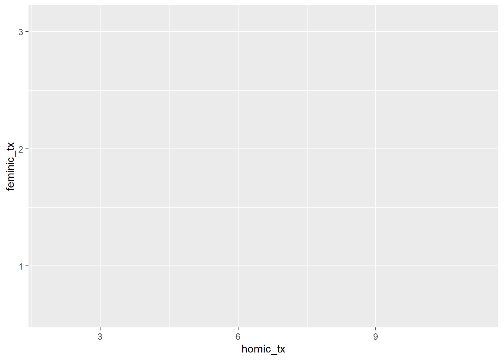
Agora podemos adicionar uma camada de pontos ao gráfico:
ggplot(data = final_fem_22, aes(x = homic_tx, y = feminic_tx))+
geom_point()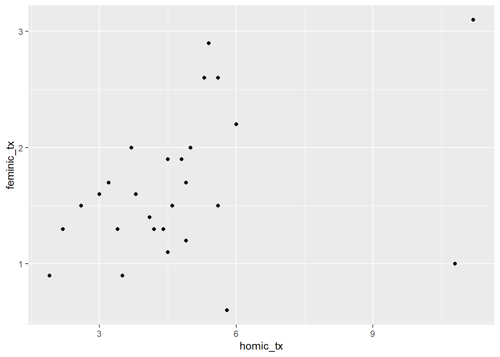
Podemos fazer com que cada ponto seja associado a uma região do Brasil:
ggplot(data = final_fem_22, aes(x = homic_tx, y = feminic_tx, colour=regiao))+
geom_point()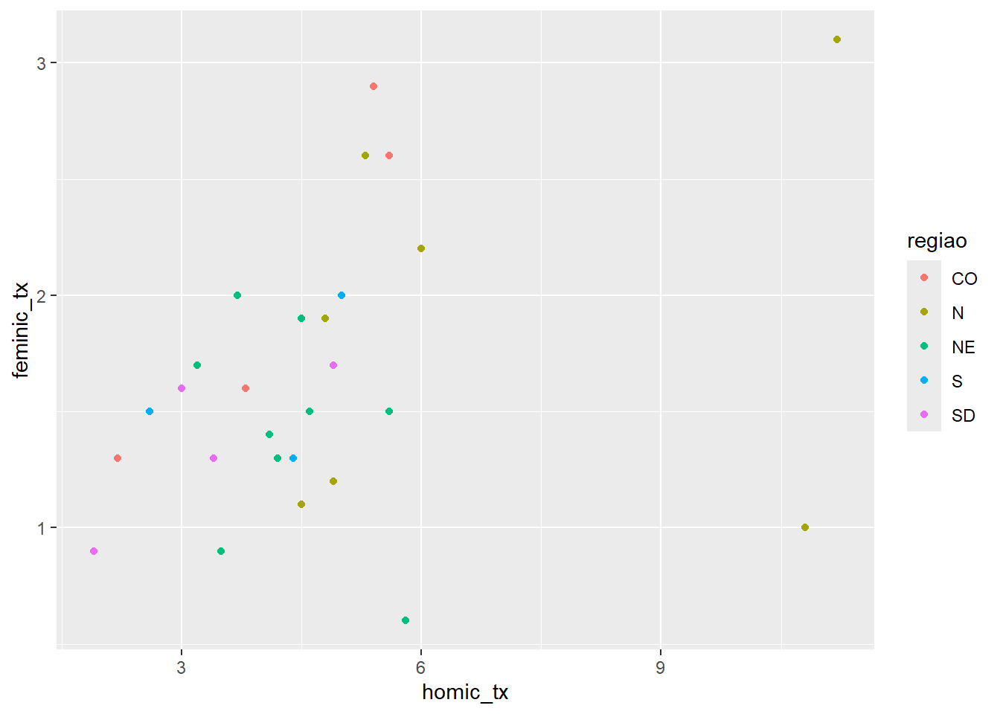
Ou podemos fazer que todos os pontos seja azul escuro:
ggplot(data = final_fem_22, aes(x = homic_tx, y = feminic_tx))+
geom_point(color="darkblue")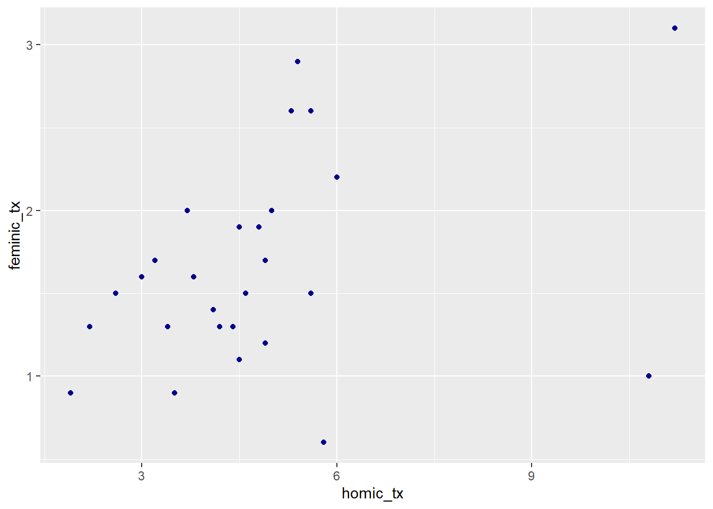
Para as cores uma possibilidade bem flexível é usar cores Hexadecimais. Vamos usar a cor #6e94bd para os pontos:
Podemos mudar o tamanho size, a transparência com alpha e a forma shape dos pontos:
ggplot(data = final_fem_22, aes(x = homic_tx, y = feminic_tx))+
geom_point(color="#6e94bd", size=3, alpha=0.7, shape=17) +
scale_x_continuous(limits = c(0, 13))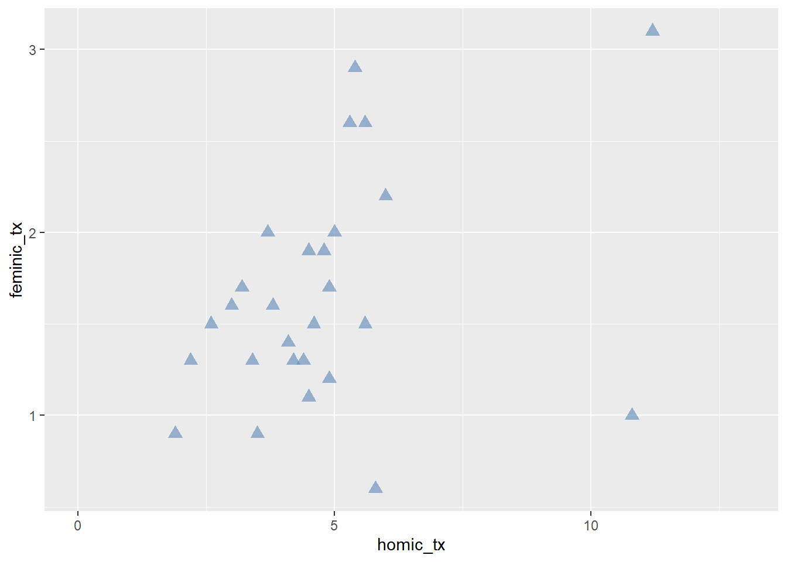
Clique aqui para ver os
shapes disponíveis
- shape = 0: quadrado
- shape = 1: círculo
- shape = 2: triângulo apontando para cima
- shape = 3: sinal de mais (+)
- shape = 4: cruz (x)
- shape = 5: losango
- shape = 6: triângulo apontando para baixo
- shape = 7: quadrado com cruz
- shape = 8: estrela
- shape = 9: losango com sinal de mais
- shape = 10: círculo com sinal de mais
- shape = 11: triângulos apontando para cima e para baixo
- shape = 12: quadrado com sinal de mais
- shape = 13: círculo com cruz
- shape = 14: quadrado com triângulo apontando para baixo
- shape = 15: quadrado preenchido
- shape = 16: círculo preenchido
- shape = 17: triângulo preenchido apontando para cima
- shape = 18: losango preenchido
- shape = 19: círculo sólido
- shape = 20: ponto (círculo menor)
- shape = 21: círculo preenchido azul
- shape = 22: quadrado preenchido azul
- shape = 23: losango preenchido azul
- shape = 24: triângulo preenchido apontando para cima azul
- shape = 25: triângulo preenchido apontando para baixo azul
Agora vamos adicionar uma escala para o eixo de x entre 0 e 13 e vamos dividir o gráfico por região:
ggplot(data = final_fem_22, aes(x = homic_tx, y = feminic_tx))+
geom_point(color="#6e94bd", size=3, alpha=0.7, shape=17) +
scale_x_continuous(limits = c(0, 13))+
facet_wrap(~regiao)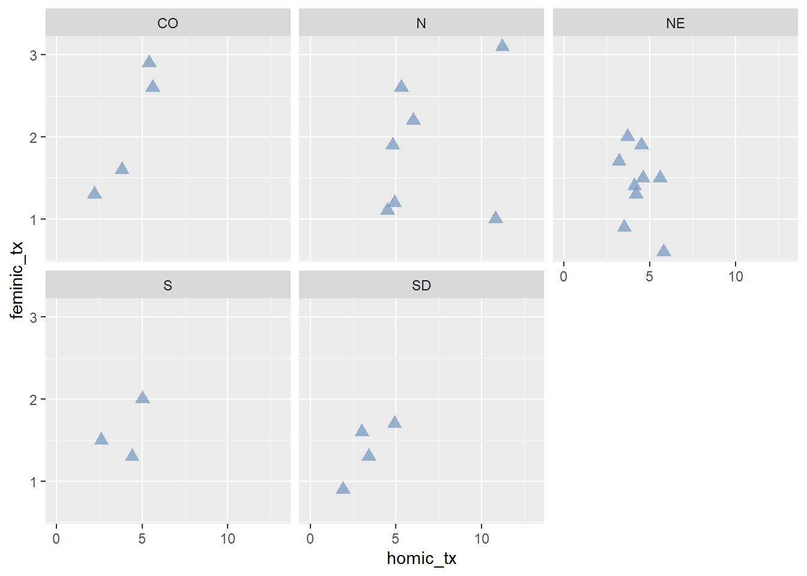
Pode-se também adicionar uma linha de tendência ao gráfico:
ggplot(data = final_fem_22, aes(x = homic_tx, y = feminic_tx))+
geom_point(color="#6e94bd", size=3, alpha=0.7, shape=17) +
scale_x_continuous(limits = c(0, 13))+
geom_smooth(method = "lm", se=FALSE , color="orange")+
facet_wrap(~regiao)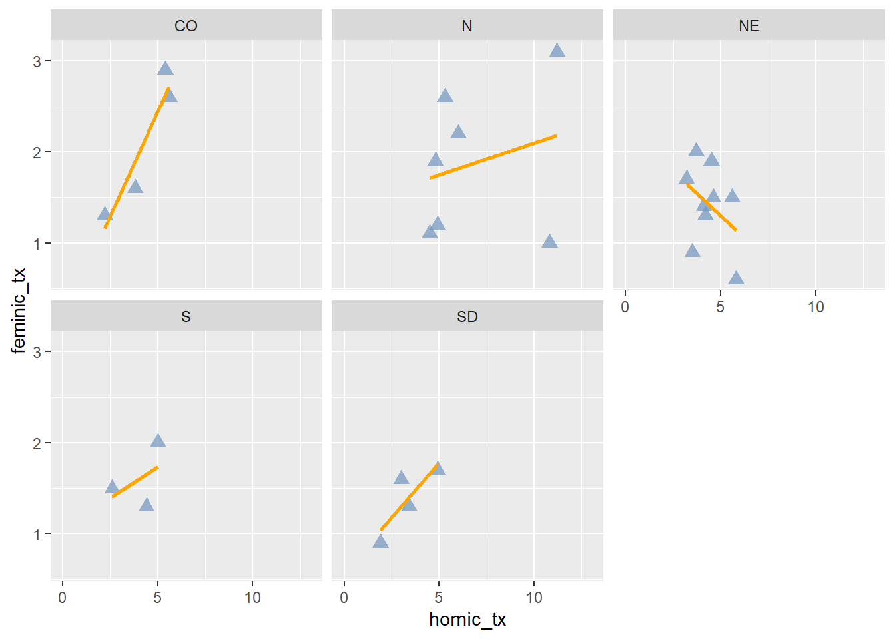
E por fim pode-se mudar o título e os rótulos dos eixos:
library(ggthemes)
ggplot(data = final_fem_22, aes(x = homic_tx, y = feminic_tx))+
geom_point(color="#6e94bd", size=3, alpha=0.7, shape=17) +
scale_x_continuous(limits = c(0, 13))+
geom_smooth(method = "lm", se=FALSE , color="orange")+
facet_wrap(~regiao)+
labs(title="Homicídios e Feminicídios por Região", x="Homicídios", y="Feminicídios")+
theme_bw()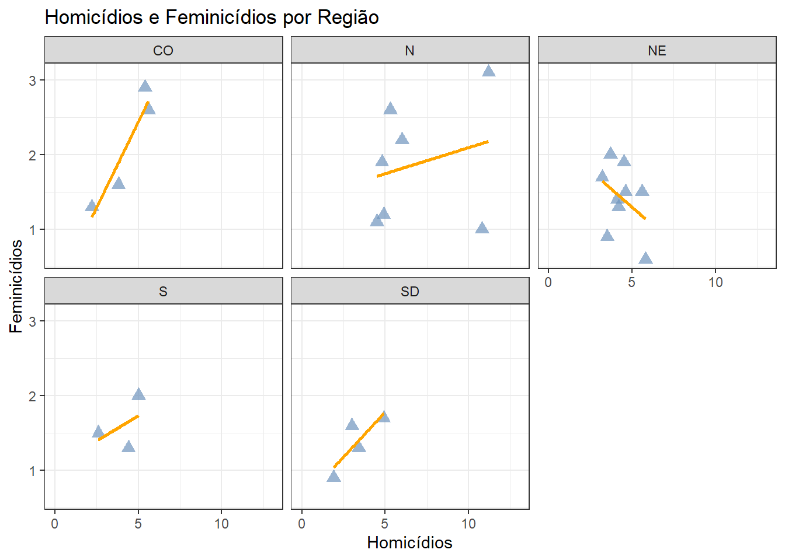
Para os temas pode acessar a Galeria ou Exemplos Dinâmicos.
6.3 Medidas de Posição:
MÉDIA AMOSTRAL:
\[\bar{x} = \frac{1}{n} \sum_{i=1}^{n} x_i\]
mean(final_fem_22$feminic_tx)[1] 1.651852A média da taxa de Feminicídio entre os Estados do Brasil é de 1,65 por 100 mil mulheres em 2022 .
library(kableExtra)
mean_1<- aggregate(final_fem_22[4:15], list(final_fem_22$regiao), mean, na.rm=T)
t(mean_1) %>%
kbl(digits = 2) %>%
kable_styling()| Group.1 | CO | N | NE | S | SD |
| homic_abs | 86.25000 | 69.85714 | 149.11111 | 212.66667 | 277.50000 |
| homic_tx | 4.250000 | 6.785714 | 4.355556 | 4.000000 | 3.300000 |
| feminic_abs | 40.50000 | 18.57143 | 43.55556 | 81.00000 | 127.50000 |
| feminic_tx | 2.100000 | 1.871429 | 1.422222 | 1.600000 | 1.375000 |
| part_feminic | 50.02500 | 30.01429 | 34.36667 | 41.53333 | 43.82500 |
| rendapc | 2011.250 | 1175.286 | 1053.222 | 1983.667 | 1842.750 |
| mais_50 | 0.5000000 | 0.1428571 | 0.2222222 | 0.3333333 | 0.2500000 |
| t_homic_abs | 258.2500 | 161.7143 | 257.7778 | 450.6667 | 455.7500 |
| t_homic_tx | 13.375000 | 24.657143 | 9.311111 | 8.966667 | 8.875000 |
| t_feminic_abs | 126.33333 | 50.28571 | 85.11111 | 169.66667 | 185.66667 |
| t_feminic_tx | 6.500000 | 5.285714 | 3.044444 | 3.500000 | 3.000000 |
| part_t_feminic | 32.67667 | 26.44286 | 25.72444 | 25.98667 | 26.50000 |
MEDIANA:
Organize os dados em ordem crescente.
Para um numero impar de observações a mediana é o valor que ocupa a posição central.
para um número par de observações, a mediana é a média dos dois valores centrais.
median(final_fem_22$feminic_tx)[1] 1.5Veja que a mediana é um valor diferente da média. Elas medem coisas diferentes. Veja o exemplo abaixo
median(c(1,3, 14))[1] 3mean(c(1,3, 14))[1] 6Mediana e média são bastante distintas. Vamos fazer uma tabela com a Média e Mediana, para o nosso conjunto de dados.
fun1 <- function(x, na.rm = TRUE) c(Média=mean(x, na.rm = TRUE), Mediana=median(x, na.rm = TRUE))
median_1 <- (sapply(final_fem_22[4:15], fun1))
t(median_1) %>%
kbl(digits = 2) %>%
kable_styling()| Média | Mediana | |
|---|---|---|
| homic_abs | 145.33 | 95.00 |
| homic_tx | 4.77 | 4.50 |
| feminic_abs | 53.22 | 33.00 |
| feminic_tx | 1.65 | 1.50 |
| part_feminic | 37.76 | 38.90 |
| rendapc | 1447.15 | 1267.00 |
| mais_50 | 0.26 | 0.00 |
| t_homic_abs | 283.70 | 264.00 |
| t_homic_tx | 13.79 | 10.00 |
| t_feminic_abs | 102.52 | 88.00 |
| t_feminic_tx | 4.14 | 3.60 |
| part_t_feminic | 26.88 | 29.73 |
MODA:
Moda é o valor que ocorre com mais frequência.
moda <- function(x, na.rm=T) {
modal <- unique(x, na.rm=T)
modal[which.max(tabulate(match(x, modal)))]
}
moda(final_fem_22$feminic_tx)[1] 1.3fun1 <- function(x, na.rm = TRUE) c(Média=mean(x, na.rm = TRUE), Mediana=median(x, na.rm = TRUE), Moda=moda(x))
median_1 <- (sapply(final_fem_22[4:15], fun1))
t(median_1) %>%
kbl(digits = 2) %>%
kable_styling()| Média | Mediana | Moda | |
|---|---|---|---|
| homic_abs | 145.33 | 95.00 | 22.0 |
| homic_tx | 4.77 | 4.50 | 4.5 |
| feminic_abs | 53.22 | 33.00 | 19.0 |
| feminic_tx | 1.65 | 1.50 | 1.3 |
| part_feminic | 37.76 | 38.90 | 50.0 |
| rendapc | 1447.15 | 1267.00 | 1010.0 |
| mais_50 | 0.26 | 0.00 | 0.0 |
| t_homic_abs | 283.70 | 264.00 | 373.0 |
| t_homic_tx | 13.79 | 10.00 | 4.2 |
| t_feminic_abs | 102.52 | 88.00 | 54.0 |
| t_feminic_tx | 4.14 | 3.60 | 2.3 |
| part_t_feminic | 26.88 | 29.73 | NA |
6.3.0.1 Visualizando as medidas por categorias
Gráfico de Pizza
O gráfico de pizza indica as proporções de uma determinada variável de classe. Aqui utilizamos a média do número de feminicídios absoluto por região.
ggplot(mean_1, aes(x = "", y = feminic_abs, fill = Group.1)) +
geom_col(width = 1, color = "lightgray") +
coord_polar(theta = "y") +
labs(title = "Média Feminicídio por Região", fill = "Região") +
theme_minimal() +
theme(axis.title = element_blank(),
axis.text = element_blank(),
axis.ticks = element_blank())+
scale_fill_brewer(palette="PuBu")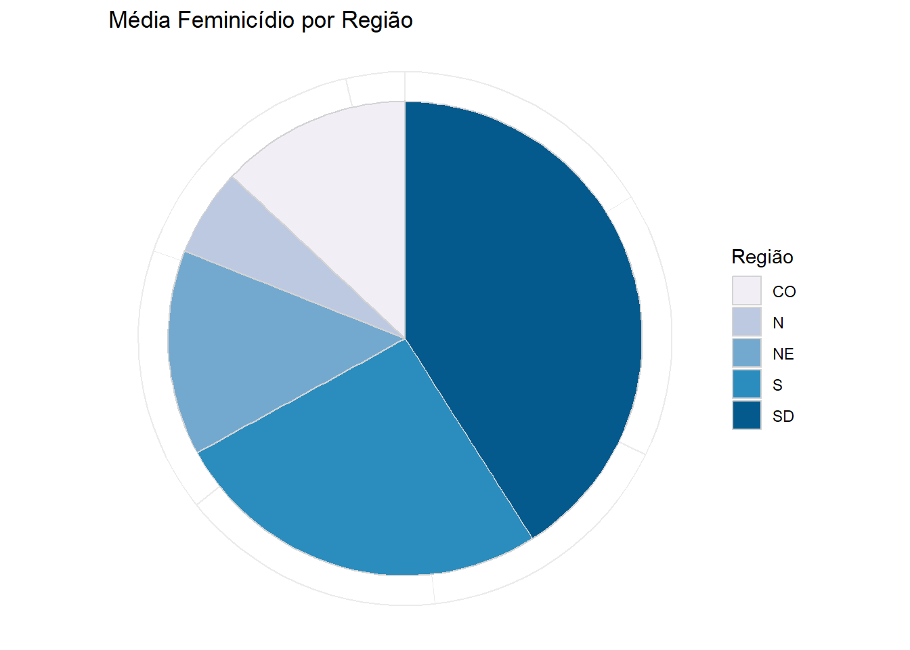
Exercício
PERGUNTA: Qual a proporção de estados que possuem taxas de feminicídio acima de 50%?
Veja a Resposta
RESPOSTA: Participação é uma variável disecreta do tipo 0 ou 1 (binárias) que indica se a taxa de feminicídio é maior que 50%.
library(dplyr)
final_fem_22 |>
group_by(mais_50) |>
summarise(cont = n()) |>
mutate(mais_50F = factor(mais_50, levels = c(0, 1), labels = c("Abaixo de 50%", "Acima de 50%"))) |>
ggplot( aes(x="", y =cont, fill=mais_50F)) +
geom_bar(stat="identity", width = 1, color = "lightgray") +
coord_polar(theta = "y", start=0)+
labs(title = "Participação do Feminicídio no Total de Homicídios Femininos", fill = "Participação Feminicídio") +
theme_minimal() +
theme(axis.title = element_blank(),
axis.text = element_blank(),
axis.ticks = element_blank())+
scale_fill_brewer(palette="Blues")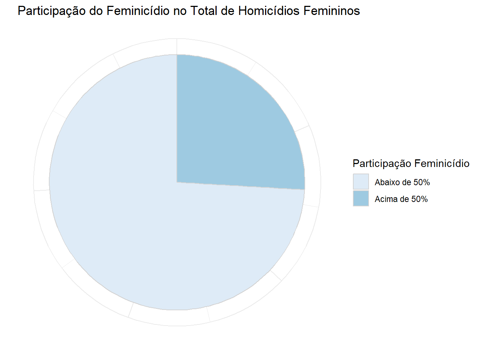
Gráfico de Barra
Em geral a utilização do gráfico de barras está relacionado ao entendimento da frequência de valores associados a uma determinada categoria. Por exemplo, imagine que temos um banco de dados com as pessoas classificadas como: i)Não trabalha; ii)Trabalha e iii)Desempregado. Teríamos três categorias e a frequência de pessoas em cada categoria. Poderíamos ainda dividir essa categoria entre homens e mulheres. Essa é a utilização mais padrão do gráfico de barras. Vejamos alguns gráficos:
ggplot(final_fem_22, aes(x = reorder(estados, -feminic_tx), y = feminic_tx)) +
geom_bar(stat = "identity", fill = "salmon2", alpha=0.5, color = "lightsalmon4") +
labs(title = "Taxa de Feminicídio por Estado",
x = "",
y = "Tx. por 100 mil") +
theme_minimal() +
theme(axis.text.x = element_text(angle = 90, vjust = 0.5, hjust = 1, size = 9)) 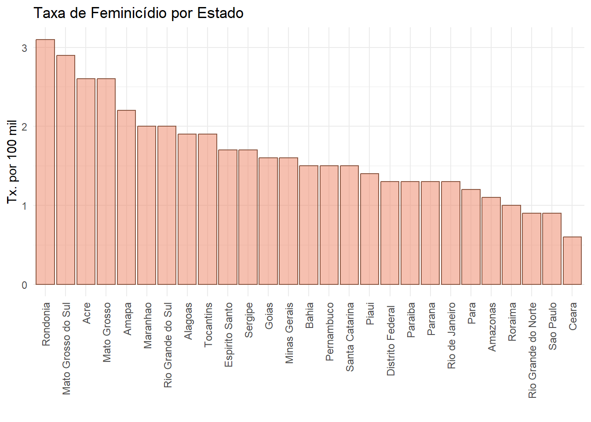
Vamos fazer um gráfico de barras para a participação do Feminicídio no total de homicídios femininos por Estado.
ggplot(final_fem_22, aes(x = reorder(estados, -part_feminic), y = part_feminic)) + # Ordem decrescente
geom_col( fill = "#3f566f", alpha=0.7, color = "#4c5471") + # Adiciona as barras, cor das barras, transparencia
labs( # e cor da borda
title = "Participação da Taxa de Feminicídio no Total por Estado", # Título do gráfico
x = "", # Rótulo do eixo x
y = "Tx. por 100 mil" # Rótulo do eixo y
) +
theme_bw() +
theme(axis.text.x = element_text(angle = 90, hjust = 1, size = 9)) # Ajusta o tamanho do texto do eixo x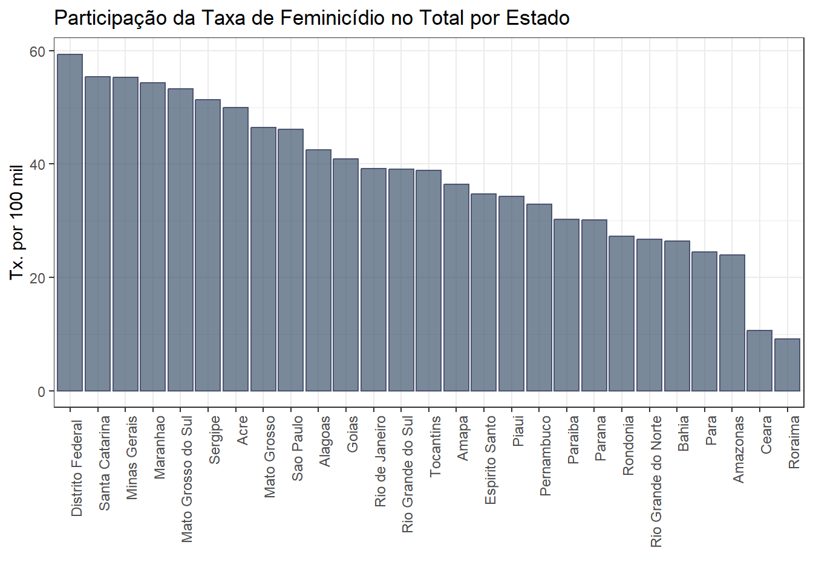
Gráfico de Barras Agrupadas
Vamos fazer um gráfico de barras agrupadas para a taxa de feminicídio e taxa de tentativa de feminicídio por região. Vamos passo a passo:
- Transformar os dados em formato long
library(tidyr)
library(dplyr)
# Transformar os dados no formato long
tx_long <- final_fem_22 %>%
arrange(desc(feminic_tx)) %>% # Ordena pelos valores de feinic_tx, decrescente
select(estados, regiao, feminic_tx, t_feminic_tx) %>% # Seleciona as colunas de interesse
pivot_longer(cols = c(feminic_tx, t_feminic_tx), # Converte para formato longo
names_to = "tipo", # Nome da coluna que identificará as variáveis
values_to = "taxa") # Nome da coluna que armazenará os valores
head(tx_long)# A tibble: 6 × 4
estados regiao tipo taxa
<chr> <chr> <chr> <dbl>
1 Rondonia N feminic_tx 3.1
2 Rondonia N t_feminic_tx 2.9
3 Mato Grosso do Sul CO feminic_tx 2.9
4 Mato Grosso do Sul CO t_feminic_tx 8.8
5 Acre N feminic_tx 2.6
6 Acre N t_feminic_tx 3.9- Criar o gráfico de barras lado a lado
# Criar o gráfico de barras lado a lado
ggplot(tx_long, aes(x = reorder(estados, -taxa), y = taxa, fill = tipo)) +
geom_bar(stat = "identity",alpha=0.7, position = "dodge", color = "white") + # Barras lado a lado posição dodge faz isso
labs(
title = "Comparação das Taxas de Feminicídio por Estado", # Título do gráfico
x = "", # Rótulo do eixo x # Rótulo do eixo x, y e legenda
y = "Tx. por 100 mil",
fill = "Tipo de Taxa"
) +
scale_fill_manual(
values = c("feminic_tx" = "#7185cc", "t_feminic_tx" = "#c2986f"), # Definir as cores para cada variável
labels = c("feminic_tx" = "Feminicídio", "t_feminic_tx" = "Tentativa de Fem.") # Definir os rótulos para cada variável
) +
theme(axis.text.x = element_text(angle = 90, hjust = 1, size = 8)) # Ajusta o tamanho do texto do eixo x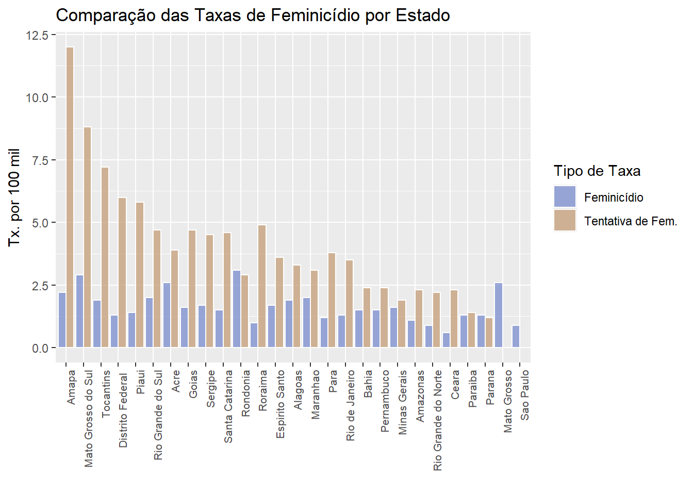
Gráfico de Linha
O gráfico de linha ou pontos é muito utilizado para visualização da evolução de séries. É um gráfico que nos permite ver a evolução dos salários entre homens e mulheres, evolução dos preços dos alimentos, evolução do número de casos de feminicídio, evolução dos processos em determinada Vara.
Nosso banco é uma fotografia e não uma evolução, o que torna esse tipo de visualização menos útil. Vejamos a como a taxa de feminicídio evolui com o aumento do número total Homicídios Femininos.
# Ordenar os dados pelo número absoluto de homicídios do menor para o maior
final_fem_22 <- final_fem_22[order(-final_fem_22$homic_abs),]
# Criar o gráfico com ggplot2
ggplot(final_fem_22, aes(x = homic_abs)) +
# Linha para 't_feminic_tx'
geom_line(aes(y = t_feminic_tx, color = "Tentativa"), linewidth = 0.8, alpha=0.4) +
geom_point(aes(y = t_feminic_tx, color = "Tentativa"), size = 3, shape = 17) +
# Linha para 'feminic_tx'
geom_line(aes(y = feminic_tx, color = "Feminicídio"), linewidth = 0.8, alpha=0.4) +
geom_point(aes(y = feminic_tx, color = "Feminicídio"), size = 3, shape = 19) +
# Escala de cores para as linhas
scale_color_manual(
values = c("Tentativa" = "#c2986f", "Feminicídio" = "#7185cc")
) +
# Títulos e rótulos
labs(
title = "Tentativa e Feminicídio: Taxa",
x = "Total de Homicídios",
y = "Taxa / 100 mil",
color = "Tipo"
) +
# Ajustes de tema
theme_minimal() +
theme(
plot.title = element_text(hjust = 0.5, size = 14, face = "bold"), # Centraliza o título, tamanho e negrito
legend.position = "top", # Posiciona a legenda no topo
legend.title = element_text(size = 10), # Ajusta o tamanho do título da legenda
legend.text = element_text(size = 9) # Ajusta o tamanho do texto da legenda
)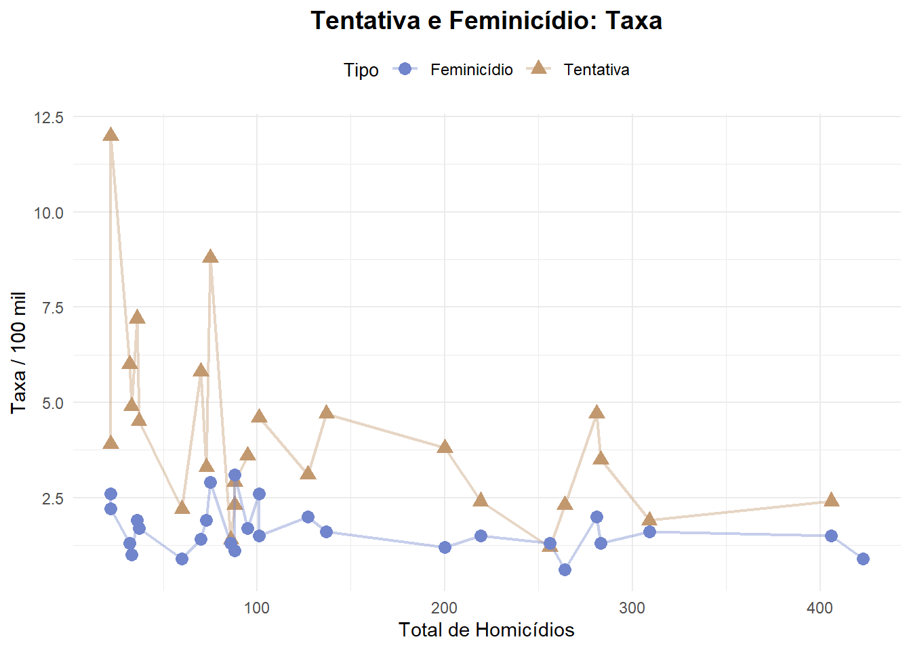
Exercício
PERGUNTA: Será que quanto maior for a renda per capita, menor será a taxa de feminicídio?
Veja a Resposta
RESPOSTA: Renda e taxa de feminicídio são variáveis continuas. O ideal seria utilizar um gráfico de dispersão para verificar a relação entre essas variáveis.
ggplot(data = final_fem_22, aes(x = rendapc, y = feminic_tx))+
geom_point(color="#6e94bd", size=3, alpha=0.7, shape=17) +
geom_smooth(method = "lm", se=TRUE , color="orange")+
labs(title="Renda pc e taxa de Feminicídios por Estado", x="Renda pc", y="Tx 100 mil")+
theme_bw()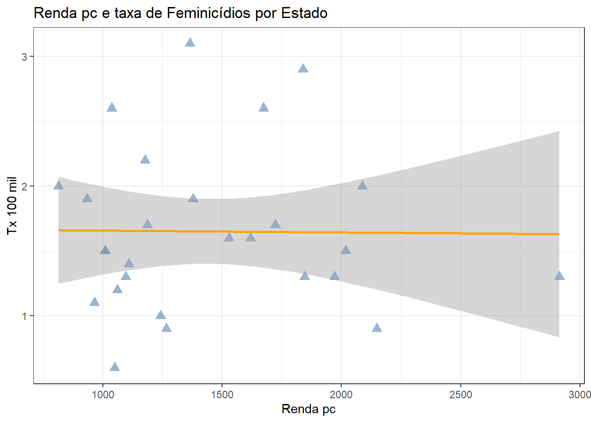
PERCENTIL:
O p-esimo percentil é um valor tal que ao menos p por cento das observações são menores ou iguais à ele e pelo menos (100-p) por cento das observações são maiores ou iguais a esse valor.
Etapas para calcular o p-ésimo percentil
Etapa 1: Organize os dados em ordem crescente.
Etapa 2: Calcule um indice, \(i\) tal que \[i = \frac{p}{100} \times n\] onde \(p\) é o percentil procurado
Etapa 3:
- Se \(i\) não for um número inteiro, arredondeo-o para cima. O próximo número inteiro maior que \(i\) denota a posição do p-esimo percentil.
- Se \(i\) for um número inteiro o p-esimo percentil será a média dos valores que o ocupam as posições \(i\) e \(i + 1\).
quantile(final_fem_22$feminic_tx, probs = c(0.10,0.30,0.60,0.85), na.rm=T) 10% 30% 60% 85%
0.96 1.30 1.66 2.24 QUARTIS:
Os quartis são medidas estatísticas que dividem um conjunto de dados ordenados em quatro partes iguais. É um caso particular do percentil.
O três quartis são:
Primeiro Quartil (Q1): Representa o valor abaixo do qual está situada a primeira quarta parte (ou 25% inferiores) dos dados quando eles estão ordenados em ordem crescente. O primeiro quartil é o valor que divide os dados em 25% (ou 0.25) abaixo e 75% (ou 0.75) acima desse ponto.
Segundo Quartil (Q2): Corresponde à mediana dos dados, dividindo o conjunto em duas metades iguais. É o valor que separa os 50% inferiores dos 50% superiores dos dados.
Terceiro Quartil (Q3): Indica o valor acima do qual está situada a terceira quarta parte (ou 25% superiores) dos dados quando eles estão ordenados. Assim como o primeiro quartil, o terceiro quartil divide os dados em 75% (ou 0.75) abaixo e 25% (ou 0.25) acima desse ponto
quantile(final_fem_22$feminic_tx, na.rm=T) 0% 25% 50% 75% 100%
0.60 1.30 1.50 1.95 3.10 6.4 Medidas de Variabilidade
AMPLITUDE:
Amplitude é a diferença entre o valor mínimo e máximo de uma série de dados.
\[\text{Amplitude} = \text{Maior Valor} - \text{Menor Valor}\]
min_max<-range(final_fem_22$feminic_tx)
amp<-min_max[2]-min_max[1]
amp[1] 2.5AMPLITUDE INTERQUANTIL:
A amplitude interquartil é dada pela diferenca entre o terceiro (\(Q_3\)) e o primeiro quartil (\(Q_1\)).
\[IQR = Q_3 - Q_1\]
qs<-quantile(final_fem_22$feminic_tx, na.rm=T)
iq<-qs[4]-qs[2]
IQR(final_fem_22$feminic_tx)[1] 0.65iq 75%
0.65 VARIÂNCIA E DESVIO PADRÃO AMOSTRAL:
A variância amostral é uma medida estatística que indica o quão dispersos estão os dados em relação à média amostral. Em outras palavras, ela quantifica a extensão das diferenças individuais entre os valores observados e a média da amostra.
Definimos a variância amostral como:
\[s^2 = \frac{\sum_{i=1}^{n} (x_i - \bar{x})^2}{n-1}\] onde \(\bar{x}\) é a média amostral.
Vejamos a variância da taxa de feminicídio e do femnicídio absoluto:
var(final_fem_22$feminic_tx, na.rm=T)[1] 0.3818234var(final_fem_22$feminic_abs, na.rm=T)[1] 2364.718O Desvio padrão amostral é derivado da variância. Podemos qualcular essa estatística da seguinte maneira:
\[s = \sqrt{s^2} = \sqrt{\frac{\sum_{i=1}^{n} (x_i - \bar{x})^2}{n-1}}\]
Para os nossos dados anteriores:
# Tx Feminicídio
sd(final_fem_22$feminic_tx, na.rm=T)[1] 0.6179186#Feminicídio Absoluto
sd(final_fem_22$feminic_abs, na.rm=T)[1] 48.62837Vamos consolidar agora nossas estatísticas descritivas em uma tabela:
fun1 <- function(x, na.rm = TRUE) c(Média=mean(x, na.rm = TRUE), Mediana=median(x, na.rm = TRUE), Var=var(x, na.rm = TRUE), DP=sd(x, na.rm = TRUE))
est_descrit <- (sapply(final_fem_22[4:15], fun1))
t(est_descrit) %>%
kbl(digits = 1) %>%
kable_styling()| Média | Mediana | Var | DP | |
|---|---|---|---|---|
| homic_abs | 145.3 | 95.0 | 13985.0 | 118.3 |
| homic_tx | 4.8 | 4.5 | 4.4 | 2.1 |
| feminic_abs | 53.2 | 33.0 | 2364.7 | 48.6 |
| feminic_tx | 1.7 | 1.5 | 0.4 | 0.6 |
| part_feminic | 37.8 | 38.9 | 175.8 | 13.3 |
| rendapc | 1447.1 | 1267.0 | 243910.6 | 493.9 |
| mais_50 | 0.3 | 0.0 | 0.2 | 0.4 |
| t_homic_abs | 283.7 | 264.0 | 25685.8 | 160.3 |
| t_homic_tx | 13.8 | 10.0 | 286.9 | 16.9 |
| t_feminic_abs | 102.5 | 88.0 | 5692.1 | 75.4 |
| t_feminic_tx | 4.1 | 3.6 | 5.9 | 2.4 |
| part_t_feminic | 26.9 | 29.7 | 83.3 | 9.1 |
COEFICIENTE DE VARIAÇÃO:
O coeficiente de variação (CV) é uma medida de dispersão relativa que expressa a variabilidade dos dados como uma porcentagem da média.
\[\text{CV} = \left( \frac{\text{Desvio padrão}}{\text{Média}} \right) \times 100\%\]
# O R nao tem nehuma funçao para isso, mas podemos fazer isso rapidamente
print((sd(final_fem_22$feminic_abs, na.rm = TRUE)/ mean(final_fem_22$feminic_abs, na.rm = TRUE)) * 100)[1] 91.36854print((sd(final_fem_22$t_feminic_abs, na.rm = TRUE)/ mean(final_fem_22$t_feminic_abs, na.rm = TRUE)) * 100)[1] 73.59146Para entendermos vamos supor que existam duas variáveis com mesmo desvio padrão, igual a 10. A primeira terá média de 10 e a segunda de 20, vejamos a diferença no coeficiente de variação.
\(\text{CV}_{X_1}=\frac{10}{10}.100=100\%\) e \(\text{CV}_{X_2}=\frac{10}{20}.100=50\%\)
A variabilidade relativa é menor para a segunda variável. No exemplo acima a taxa de feminicídio tem uma variabilidade relativa maior (91%) do que a tentativa de feminicídio (74%) entre os Estados Brasileiros.
6.4.0.1 Visualizando a Distribuição dos Dados
Boxplot
O boxplot é um gráfico que traz muitas informações e pode ser visto como a distribuição de probabilidade dos dados. O box ou caixa contém 50% dos dados. O limite superior indica o percentil de 75% (Q3) e o limite inferior indica o percentil de 25% (Q1). A linha que corta o box indica a mediana, ou seja, Q2. Os bigodes são calculados com base na distância interquantílica, ou seja,
Limite inferior: Q1-1,5(Q3-Q1)
Limite superior:Q3+1,5(Q3-Q1)
Dados fora desses limites são classificados como suspeitos de serem outliers. Podemos observar a assimetria dos dados quando a mediana não está no meio da caixa, indicando maior densidade na menor distância entre os quartis Q1 ou Q3 e a mediana Q2. Vejamos agora o boxplot da taxa de feminicídio e da taxa de feminicídio por região.
ggplot(final_fem_22, aes(y = feminic_tx)) +
geom_boxplot(fill = "steelblue", color = "darkblue", alpha=0.7, # Linhas tracejadas no boxplot
outlier.shape = 16, outlier.color = "red", outlier.size = 3) + # Boxplot com preenchimento azul e bordas pretas
labs(
title = "Boxplot da Taxa de Feminicídio no Brasil, 2022", # Título do gráfico
x = "", # Sem rótulo no eixo x
y = "Tx de Feminicídio / 100 mil" # Rótulo do eixo y
) +
coord_flip() + # Inverte os eixos para horizontalidade
scale_x_continuous(limits = c(-0.8, 0.8)) + # Limita o eixo y entre 0 e 6
theme_bw() + # Tema limpo e moderno
theme(
plot.title = element_text(hjust = 0.5, size = 14, face = "bold"), # Centraliza e estiliza o título
axis.text.y = element_text(size = 10), # Ajusta o tamanho do texto no eixo y
axis.title.y = element_text(size = 12) # Ajusta o tamanho do rótulo do eixo y
)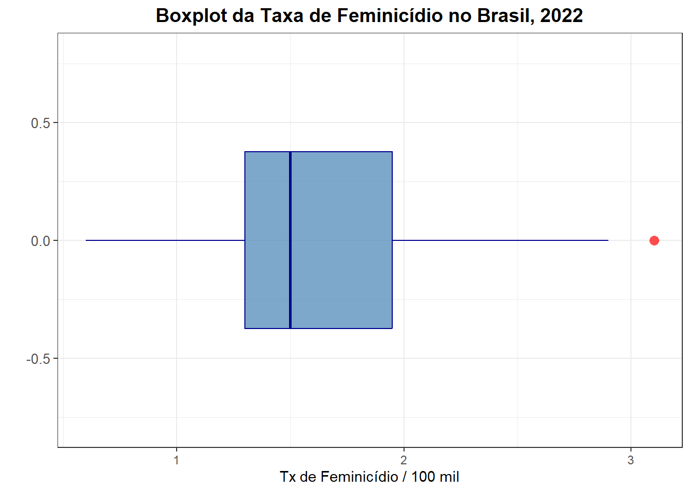
ggplot(final_fem_22, aes(x = regiao, y = feminic_tx, fill = regiao)) +
geom_boxplot(
color = "darkblue", alpha=0.7, # Boxplot linha azul, outlier vermelho e transparete
outlier.shape = 16, outlier.color = "red", outlier.size = 3
) +
labs(
title = "Boxplot da Taxa de Feminicídio no Brasil, 2022", # Título do gráfico, x e y e nome da legenda
x = "Região",
y = "Tx de Feminicídio / 100 mil",
fill = "Região" # Rótulo do eixo y
) +
coord_flip() + # Inverte os eixos para horizontalidade
theme_bw() +
theme(
plot.title = element_text(hjust = 0.5, size = 14, face = "bold"), # Centraliza e estiliza o título
axis.text.y = element_text(size = 10), # Ajusta o tamanho do texto no eixo y
axis.title.y = element_text(size = 12), # Ajusta o tamanho do rótulo do eixo y
legend.position = c(0.9,0.7) # Posição da Legenda quadrado de 1x1
)+
scale_fill_brewer(palette="Blues")Warning: A numeric `legend.position` argument in `theme()` was deprecated in ggplot2
3.5.0.
ℹ Please use the `legend.position.inside` argument of `theme()` instead.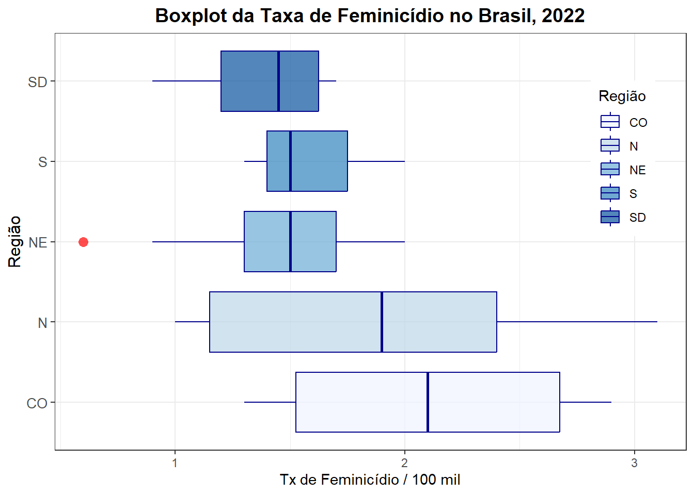
O Violin Plot é muito parecido com o BoxPlot mas com a densidade de kernel rotacionada em cada um dos lados. Assim, indica a distribuição dos dados em cada ponto e vem anotado a mediana na forma de um ponto ou marca e um pequeno boxplot no centro do violin plot.
library(dplyr)
final_fem_22 <- final_fem_22 %>%
mutate(N_NE_CO = case_when(
regiao %in% c("N", "NE", "CO") ~ 1, # Região Norte, Nordeste e Centro-Oeste recebem 1
TRUE ~ 0 # Demais regiões recebem 0
))
# Verificar a distribuição da variável N_NE_CO por região
table(final_fem_22$N_NE_CO, final_fem_22$regiao)
CO N NE S SD
0 0 0 0 3 4
1 4 7 9 0 0ggplot(final_fem_22, aes(x = factor(N_NE_CO, labels = c("Sul e Sudeste", "Norte, Nord. e C.Oeste")), # Transformando em fatores
y = feminic_tx, fill = factor(N_NE_CO))) + # Taxa de Feminicídio por Fator
geom_violin(trim = FALSE, color = "white") + # Cria o gráfico de violino
scale_fill_manual(values = c("lightblue", "steelblue")) + # Cor das violas
stat_summary(fun="median", geom = "point", shape=19, size=3, color="darkorange" ) + # Vamos colocar o ponto mediana
labs(
title = "Violin Plots da taxa de feminicídio por região do Brasil",
x = "Região",
y = "Taxa de Feminicídio (por 100 mil)",
fill = "Região"
) +
theme_minimal() +
theme(
plot.title = element_text(hjust = 0.5, size = 14, face = "bold"), # Centraliza o título
axis.text.x = element_text(size = 12), # Ajusta o tamanho dos rótulos no eixo X
axis.text.y = element_text(size = 10), # Ajusta o tamanho dos rótulos no eixo Y
legend.position = "none" )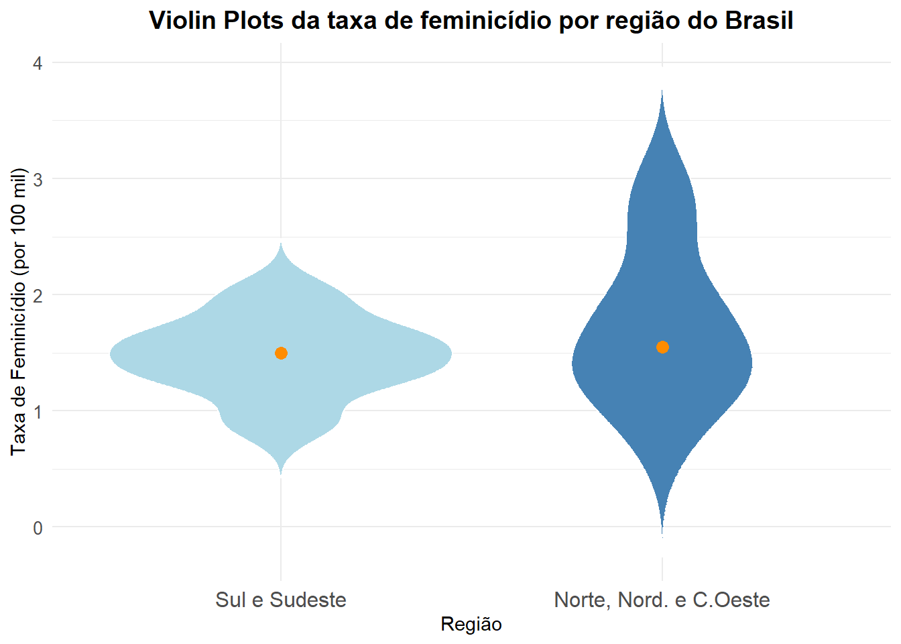
Gráfico de Densidade
Visualizar a distribuição empírica dos dados fornece uma grande quantidade de informação. Um gráfico básico em análise descritiva é o histograma, o qual fornece a distribuição de probabilidade empírica dos dados em um formato de barras. A área do histograma é igual a 1 e altura da sua barra da a densidade de observações em cada classe. “#c2986f”, “Feminicídio” = “#7185cc”)
ggplot(final_fem_22, aes(x = feminic_tx)) +
geom_histogram(bins = 8, fill = "#7185cc", color = "white", alpha = 0.7) + # bins são os números de barras
# Linha vertical com 70% de transparência, que mostra a média da taxa de feminicídio
geom_vline(aes(xintercept = mean(feminic_tx)), color = "#c2986f", size = 1, alpha = 0.7,linetype = "dashed") +
labs(
x = "Taxa de Feminicídio", # Título do eixo X, y e grafico
y = "Frequência",
title = "Histograma da Taxa de Feminicídio"
) +
theme_minimal() +
theme(
plot.title = element_text(hjust = 0.5, size = 14, face = "bold"), # Centraliza o título
axis.text.x = element_text(size = 12), # Ajusta o tamanho dos rótulos no eixo X
axis.text.y = element_text(size = 10))Warning: Using `size` aesthetic for lines was deprecated in ggplot2 3.4.0.
ℹ Please use `linewidth` instead.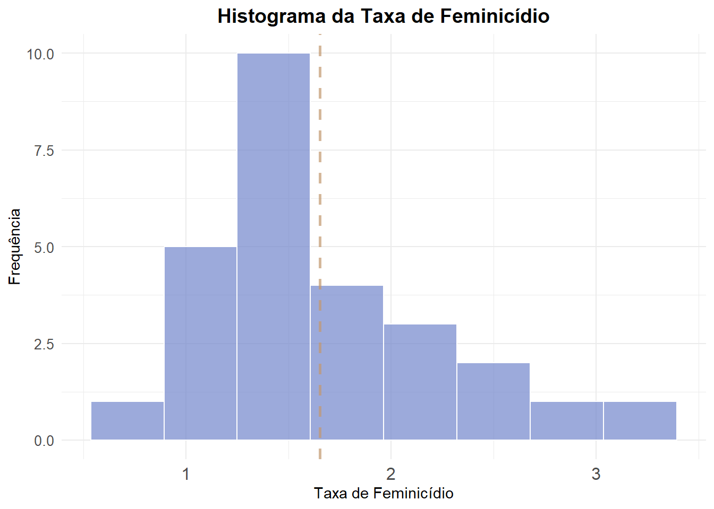
Uma outra maneira de visualizar os dados é utilizando uma distribuição continua e não mais a discreta. Para isso, utiliza-se a densidade de Kernel para visualização da distribuição de probabilidade da taxa de feminicídio. Vejamos
ggplot(final_fem_22, aes(x = feminic_tx)) +
geom_density(fill = "#7185cc", color = "darkblue", alpha = 0.6) + # Curva de densidade e preenchimento
scale_x_continuous(limits = c(0, 4)) + # Limita o eixo X entre 0 e 10
labs(
x = "Taxa de Feminicídio", # Título do eixo X, Y e Gráfico
y = "Densidade",
title = "Densidade de Kernel para a Taxa de Feminicídio"
) +
theme_minimal() +
theme(
plot.title = element_text(hjust = 0.5, size = 14, face = "bold"), # Centraliza o título
axis.text.x = element_text(size = 12), # Ajusta o tamanho dos rótulos no eixo X
axis.text.y = element_text(size = 10))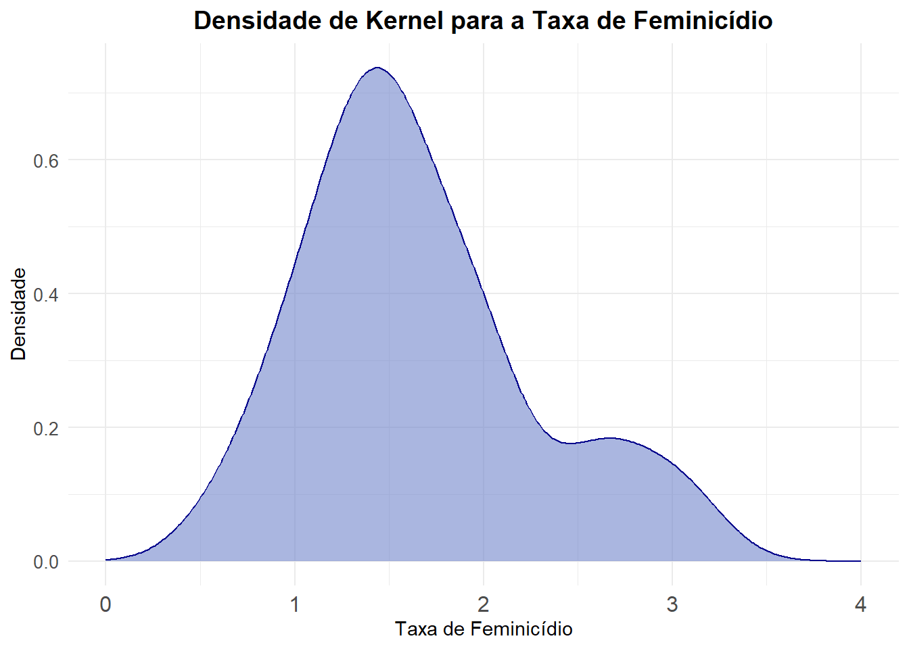
Podemos analisar mais de uma variável juntamente no gráfico acima. Vamos ver a Taxa de Feminicídio e a Tentativa de Feminicídio
ggplot(final_fem_22) +
geom_density(aes(x = feminic_tx), fill = "#7185cc", color = "#7185cc", alpha = 0.6) + # Curva de densidade e preenchimento
geom_density(aes(x = t_feminic_tx), fill = "#c2986f", color = "#c2986f", alpha = 0.6) + # Curva de densidade e preenchimento
scale_x_continuous(limits = c(0, 15)) + # Limita o eixo X entre 0 e 10
labs(
x = "Taxa de Feminicídio", # Título do eixo X, Y e Gráfico
y = "Densidade",
title = "Densidade de Kernel para a Taxa de Feminicídio",
fill = "Tipo"
) +
theme_minimal() +
theme(
plot.title = element_text(hjust = 0.5, size = 14, face = "bold"), # Centraliza o título
axis.text.x = element_text(size = 12), # Ajusta o tamanho dos rótulos no eixo X
axis.text.y = element_text(size = 10)
)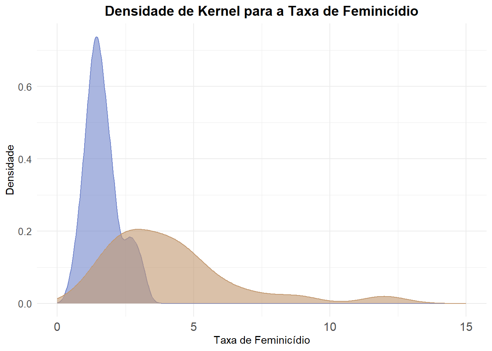
Outra forma útil de visualizar os dados a é distribuição por classe, por exemplo distribuição de salários entre homens e mulheres, distribuição do tempo do processo por vara, distribuição da taxa de feminicídio por região. Vamos utilizar a densidade de Kernel para analisar a distribuição dos valores da taxa de feminicídio por região. Para isso precisa instalar o pacote sm.
ggplot(final_fem_22, aes(x = feminic_tx, fill = factor(N_NE_CO))) + # Curvas de densidade para as duas regiões
geom_density(alpha = 0.6, color = "white") +
scale_fill_manual(values = c("1" = "#7185cc", "0" = "#c2986f"),
labels = c("Norte, Nordeste, Centro-Oeste", "Sul e Sudeste")) +
scale_x_continuous(limits = c(0, 5)) +
# Adicionar rótulos e título
labs(
x = "Taxa de Feminicídio",
y = "Densidade",
title = "Comparação da Taxa de Feminicídio entre Regiões",
fill = "Região"
) +
# Ajustar o tema e a aparência do gráfico
theme_minimal() +
theme(
plot.title = element_text(hjust = 0.5, size = 14, face = "bold"),
axis.text.x = element_text(size = 12),
axis.text.y = element_text(size = 10),
legend.position = "top", # Posição da legenda
legend.title = element_text(size = 10),
legend.text = element_text(size = 8)
)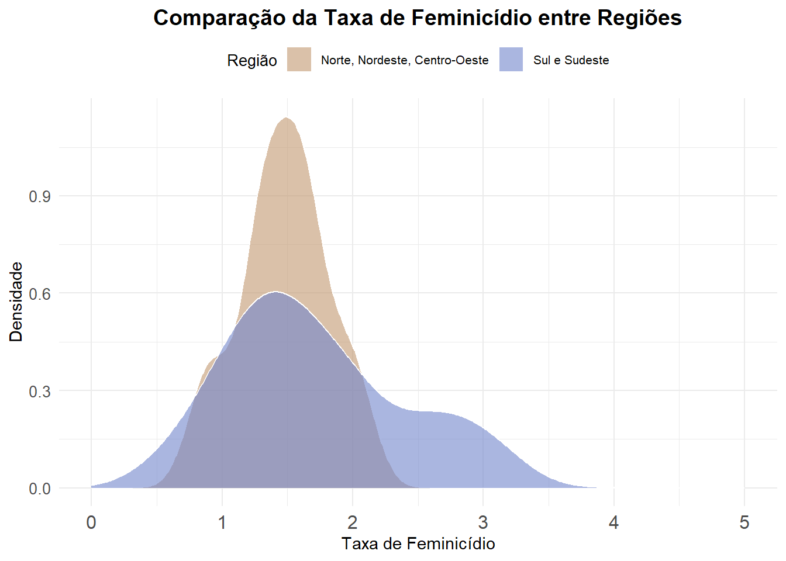
Exercício
PERGUNTA: Gostaria de ter uma distribuição das Tentativa de Feminicídio por Estado mostrando os quartis, mediana e média.
Dica: Utlizar a densidade e o boxplot?
Veja a Resposta
RESPOSTA: Aqui segue uma sugestão de plotar a densidade juntamente com o boxplot, possibilitando em um mesmo gráfico uma maior quantidade de observação. Veja abaixo:
library(ggplot2)
library(gridExtra)
# Criar o histograma com ggplot2
dens_t_f <- ggplot(final_fem_22, aes(x = t_feminic_tx)) +
geom_density(fill = "#7185cc", color = "darkblue", alpha = 0.6) +
geom_vline(aes(xintercept = mean(t_feminic_tx, na.rm=TRUE)), color = "#c2986f", size = 1, alpha = 0.7,linetype = "dashed") +
scale_x_continuous(limits = c(0, 15)) +
labs(x = "Taxa de Feminicídio", y = "Frequência") +
theme_minimal() +
theme(
panel.background = element_blank(), # Remove o fundo do gráfico
plot.background = element_blank(), # Remove o fundo do gráfico
axis.line = element_blank(), # Remove as linhas dos eixos X e Y
axis.ticks = element_blank() # Remove os ticks dos eixos X e Y
)
# Criar o boxplot com ggplot2
bp_t_f <- ggplot(final_fem_22, aes(x = feminic_tx)) +
geom_boxplot(fill = "#c2986f", color = "darkblue", outlier.shape = 16, outlier.size = 3) +
labs(x = NULL, y = NULL) +
theme(
panel.background = element_blank(), # Remove o fundo do painel
plot.background = element_blank(), # Remove o fundo do gráfico
axis.line = element_blank(), # Remove as linhas dos eixos X e Y
axis.ticks = element_blank(), # Remove os ticks dos eixos X e Y
axis.text = element_blank() ) # Remove os textos dos eixos X e Y
# Organizar os gráficos usando grid.arrange
grid.arrange( bp_t_f, dens_t_f,
ncol = 1, heights = c(1, 4))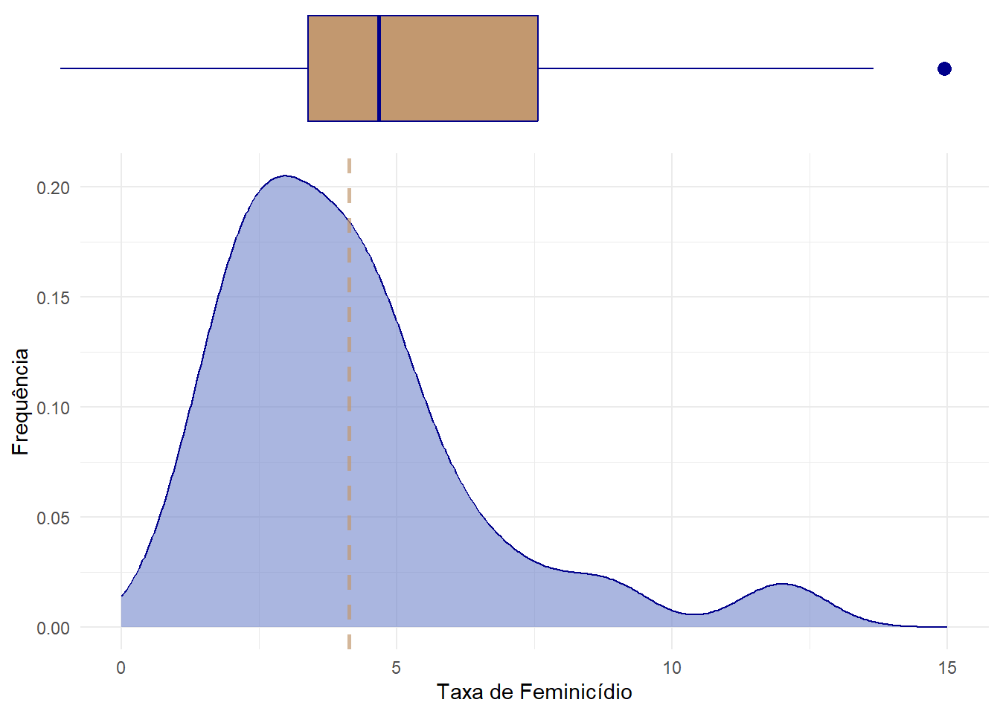
6.5 Medidas de Associação
COVARIÂNCIA AMOSTRAL
Covariância entre duas variáveis: A covariância entre duas variáveis X e Y é uma medida estatística que descreve como essas variáveis variam juntas. Em outras palavras, a covariância indica a tendência de X e Y de se moverem na mesma direção (covariância positiva) ou em direções opostas (covariância negativa).
\[\text{Cov}(X, Y) = \frac{1}{n-1} \sum_{i=1}^{n} (X_i - \bar{X})(Y_i - \bar{Y})\]
cov(final_fem_22$feminic_tx, final_fem_22$homic_tx)[1] 0.4648575CORRELAÇÃO
O coeficiente de correlação entre duas variáveis X e Y é uma medida estatística que descreve a força e a direção da relação linear entre essas variáveis. O coeficiente de correlação é frequentemente representado pelo coeficiente de correlação de Pearson, \(r_{XY}\).
\[r_{XY} = \frac{\text{Cov}(X, Y)}{s_X s_Y}\] O coeficiente de correlação de Pearson é uma medida amplamente utilizada para avaliar a relação linear entre variáveis, pois fornece uma interpretação padronizada da força e direção da relação, independentemente das unidades das variáveis.
cor(final_fem_22$feminic_tx, final_fem_22$homic_tx)[1] 0.35890686.5.0.1 Visualizando a Associação
Scatter Plot
O Scatter Plot é conhecido como o gráfico de dispersão. Ele relaciona duas ou três variáveis, ou seja, plota \(X\) contra \(Y\). Muito utilizado para ver o comportamento conjunto de duas séries.
Como já visto que renda pc e a taxa de feminicídio não mostram um comportamento conjunto:
ggplot(data = final_fem_22, aes(x = rendapc, y = feminic_tx))+
geom_point(color="#6e94bd", size=3, alpha=0.7, shape=17) +
scale_y_continuous(limits = c(0, 5)) +
geom_smooth(method = "lm", se=TRUE , color="orange")+
labs(title="Renda pc e taxa de Feminicídios por Estado", x="Renda pc", y="Tx 100 mil")+
theme_bw()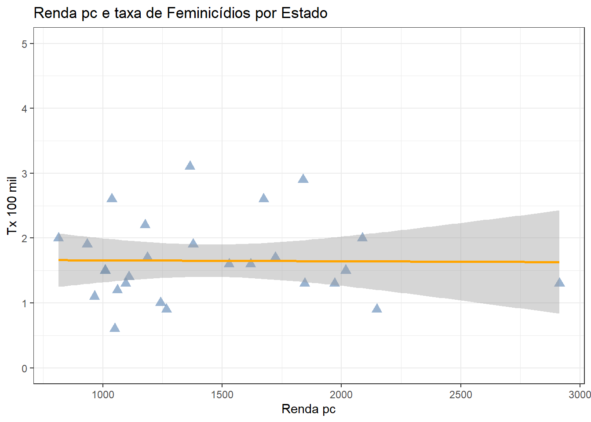
Ao observar o homicídio absoluto e o feminicídio absoluto, estados com maiores números de homicídio tendem a ter maior número de feminicídios.
# Primeiro vou fzer a correlação
correl1<-cor(final_fem_22$part_feminic, final_fem_22$homic_tx)
#Depois montamos o Gráfico e anotamos a correlação no gráfico
ggplot(data = final_fem_22, aes(x = part_feminic, y = homic_tx))+
geom_point(color="#6e94bd", size=3, alpha=0.7, shape=17) +
geom_smooth(method = "lm", se=TRUE , color="orange")+
labs(title="Taxa de Homicídio por 100 mil mulheres e a Participação do Feminicídio",
x="Participação do Feminicídio",
y="Taxa de Homicídio")+
annotate(
"text",
x=40, y=9,
label = paste("Correlação: ", round(correl1, 2)),
color = "#6e94bd", size = 4, hjust = 0
) +
theme_bw()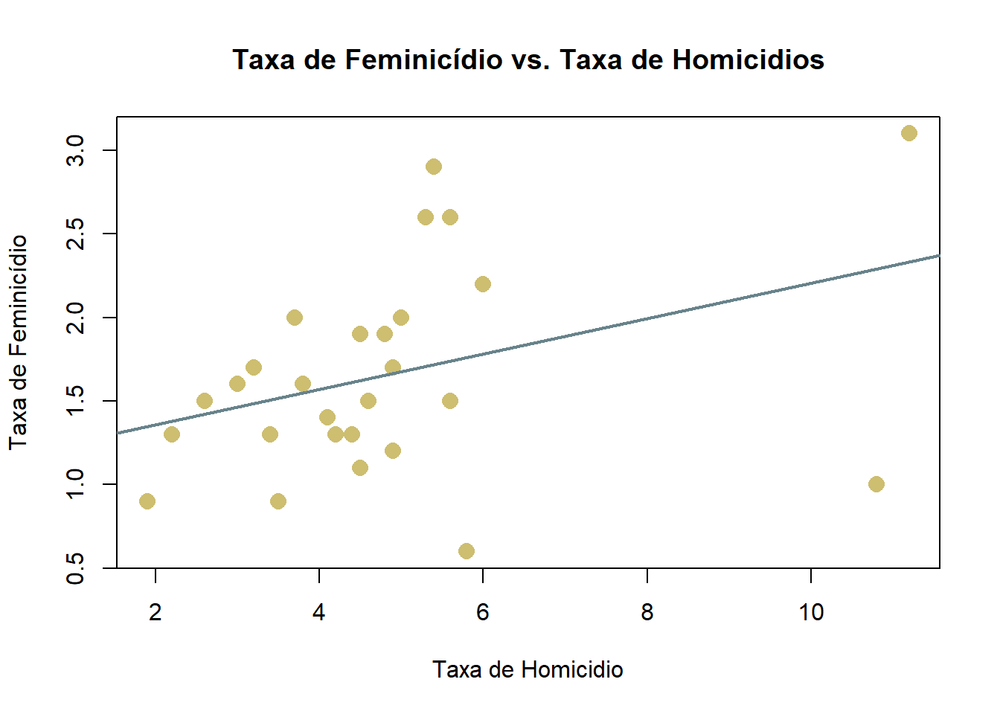
library(corrgram)
correl<- final_fem_22[c(5,7,8,9,13,15,16)]
corrgram(correl, order=TRUE, lower.panel=panel.shade, upper.panel=panel.cor, main="Correlação entre as diversas variáveis") 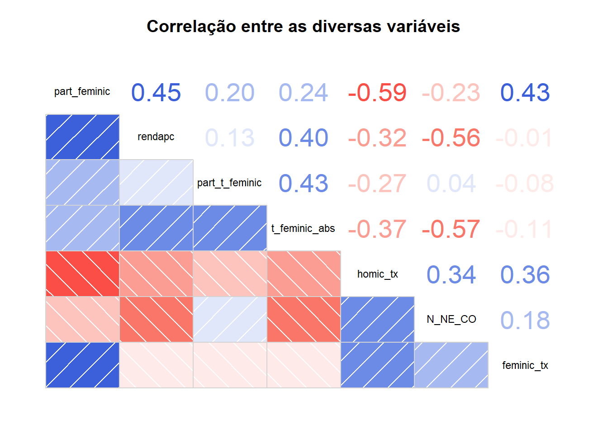
#install.packages("ggcorrplot")
library(ggcorrplot)
correl2<- round(cor(final_fem_22[c(5:9, 12)]),2)
ggcorrplot(correl2, hc.order = TRUE, type = "lower", # Matriz de correlação, coloca de forma ordenada e inferior
lab = TRUE, lab_size = 3, lab_col = "#616161", # mostra os valores tamanho 4
outline.col = "white",
ggtheme = ggplot2::theme_minimal,
colors = c("#6D9EC1", "white", "#c2986f"))+ # cores utilizadas
# Colocando nomes
labs(title = "Correlação entre as Diversas Variáveis")+ # Título
#Trocando os nomes das variáveis
scale_y_discrete(labels = c("Feminic. Abs.", "Part. Feminic.", "Renda pc", # Nomes no eixo X
"Taxa Homic.", "Homic. Abs.")) +
scale_x_discrete(labels = c("Part. Feminic.", "Renda pc",
"Taxa Homic.", "Homic. Abs.", "Taxa Feminic.")) # Nomes no eixo Y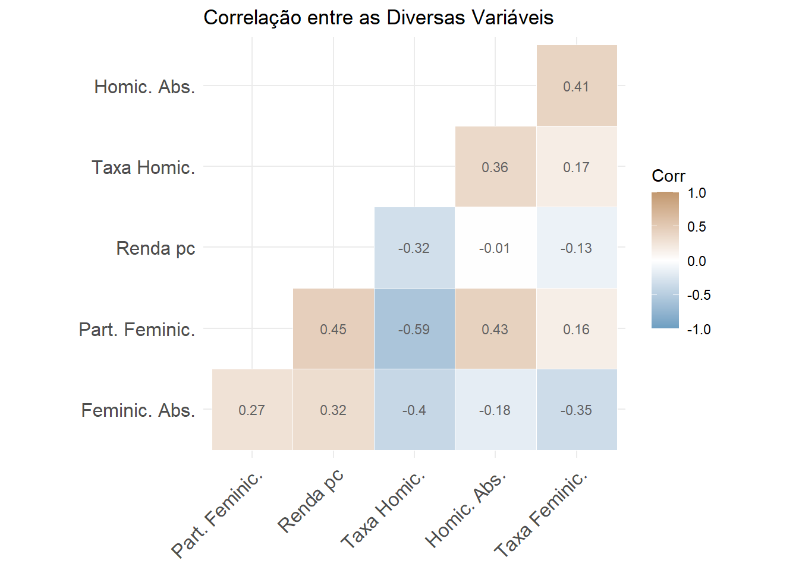
Salvando nosso banco para a próxima seção
save(final_fem_22, file = "final_fem_22.RData")